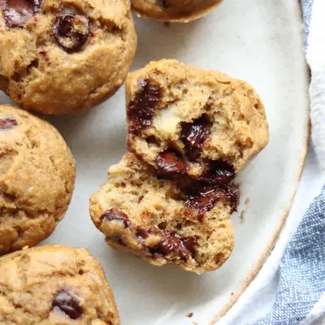

Mini Banana Muffins

Ingredients
- 1 1/2 cups white whole wheat flour (210g)
- 1 teaspoon baking powder
- 1/2 teaspoon baking soda
- 1 teaspoon cinnamon
- 1 cup mashed banana (240g) , 2-3 medium bananas
- 2 eggs, room temperature
- 1/4 cup milk of choice, room temperature
- 1/4 cup unsweetened applesauce (65g)
- 3 tablespoon melted butter
- 1 teaspoon vanilla
- 3/4-1 cup chocolate chips, chopped nuts, dried fruits
Steps
- Preheat oven to 375 degrees Fahrenheit. Grease a nonstick 24 cup muffin pan or use a silicone muffin pan.
- In a large bowl, stir together the dry ingredients. In a medium bowl, whisk together the wet ingredients.
- Combine the dry and wet ingredients. Be careful not to over mix! Use a spatula (instead of a whisk) to gently stir together until all the flour is wet. The less you stir the mixture, the lighter and fluffier your muffins will be.
- Stir in chocolate chips. Divide batter evenly into muffin pan and bake for 12-14 minutes, or until the inserted toothpick in the center of the muffin comes out clean. Allow the muffins to cool for 3-5 minutes before transferring to a wire rack to cool completely.
Recipe by Min Kwon · Kidfriendly Meals, from MJ and Hungryman. Saved here for personal use; the original has the full notes, tips and photos. Open original